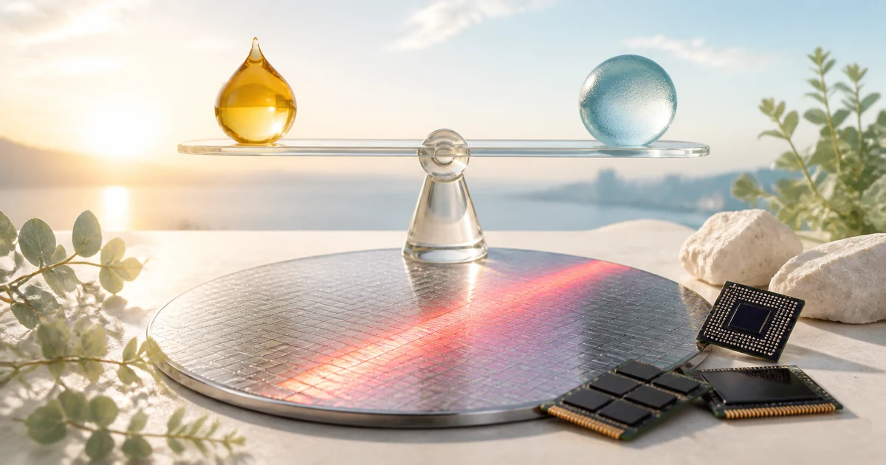
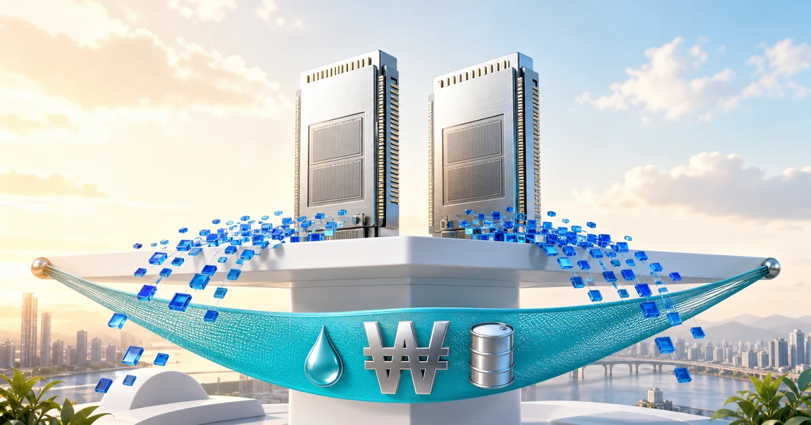
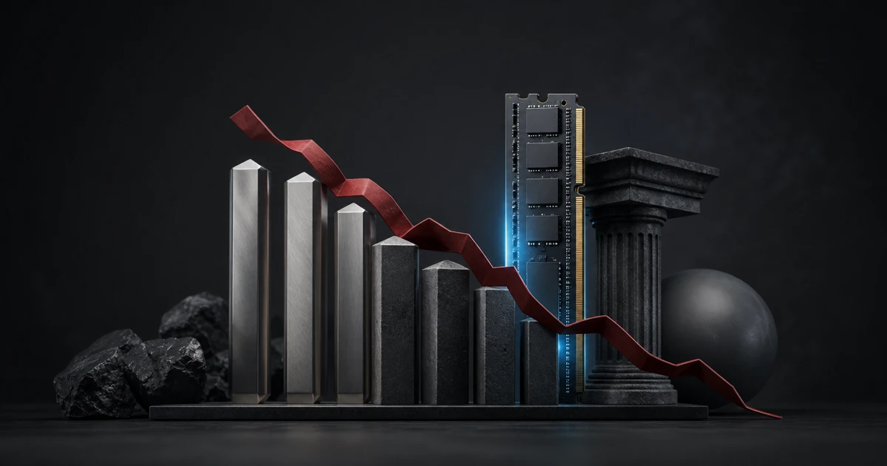
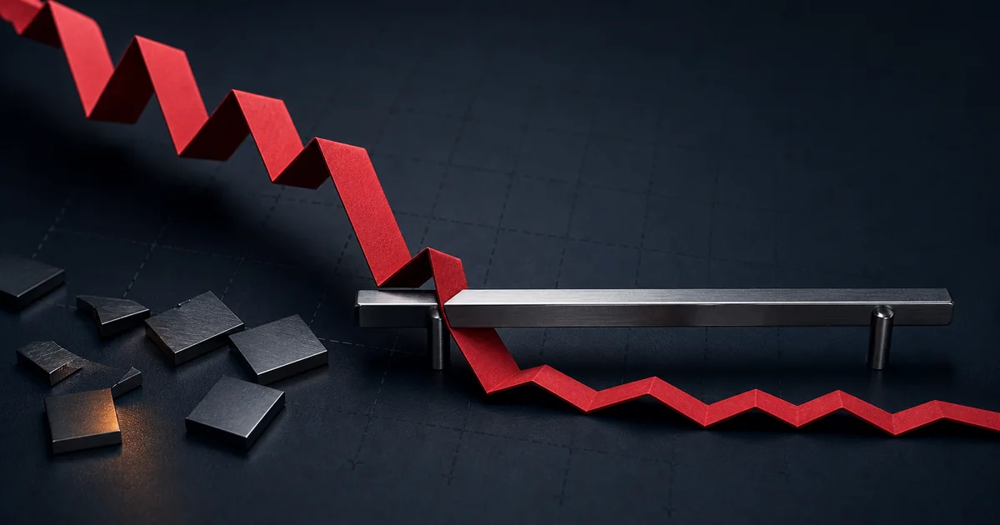

KOSPI · KODEX · Memory
시황분석 대시보드
대형 반도체와 코스닥의 온도차, 투자 주체별 수급과 메모리 실물 가격을 한 화면에서 비교합니다.
시장 시세를 불러오는 중입니다.
Market analysis
시황분석
지수 방향보다 수급 주체, 시장 폭, 메모리 실물 가격의 온도차를 먼저 읽습니다.
오늘 시장 요약
최신 시장 요약을 불러오는 중입니다.
이전 분석 대비 변화
팩터 분석
오늘 시장을 움직인 여섯 축
프로그램·선물
현물 반등과 지수 헤지의 공존
메모리 실물
주가보다 강한 공급 부족
Research archive
일일시황
발행일 기준 최신순 · 21편
메모리값이 밀어 올린 AI 서버 가격, 삼성·하이닉스는 엇갈렸다
메모리 가격 결정력과 AI 서버 비용 부담, 엇갈린 장전 메모리주 흐름을 함께 봅니다.
유가·금리 다시 뛴 밤, 메모리주는 버텼다
유가·미국 장기금리 상승과 메모리 상대 강도가 맞선 오늘의 기준선을 봅니다.
SK하이닉스 40조 자사주 소각, 반도체 약세를 뒤집을까
대규모 자사주 소각 공시와 미국 반도체 약세가 맞선 오늘의 기준선을 봅니다.
미국 반도체 급락, KOSPI는 6,600선을 지킬까
미국 반도체 급락과 국내 메모리 장전 약세 뒤 오늘의 기준선을 봅니다.
메모리만 오른 미국장, KOSPI 7,000선은 유가와 금리를 넘을까
Micron·NXT 강세와 유가·금리 부담이 맞선 오늘의 기준선을 봅니다.
KOSPI 11.5% 급등 뒤, 다음 주 7,000선 수급 시험
외국인 3조원 순매수와 메모리 강세가 만든 급등을 결산하고 다음 주 7,000선의 성립 조건을 봅니다.
PPI 안도와 메모리 강세, KOSPI 6,896 돌파 시험
전날 급등과 EWY 후행 반영을 다시 더하지 않고 6,896 돌파의 외국인 수급을 봅니다.
CPI 안도 뒤 반도체 재상승, KOSPI는 전일 고점을 넘을까
전날 급등을 중복 계산하지 않고 외국인 수급과 6,668 돌파 여부를 봅니다.

반도체는 버텼지만 CPI가 남았다, KOSPI 6,300선 공방
Super Micro·CoreWeave·Lumentum 실적과 전일 국내 수급, 유가와 오늘 밤 CPI를 함께 읽습니다.
유가 5% 급등과 반도체 매도, KOSPI 6,200선 시험
유가·장기금리 상승과 미국 반도체 급락 뒤 외국인 현물 매수와 프로그램 매도의 충돌을 읽습니다.
고용 쇼크가 금리를 눌렀다, KOSPI 6,400선 재도전
미국 고용 감소와 금리 하락, 금요일 수급 역전, 메모리 현물가와 CPI까지 개장 전 확인합니다.

외국인·프로그램 순매수, KOSPI 6,400선 공방
전일 급락 뒤 돌아온 현물 수급과 유가·금리·미국 고용보고서의 반등 상단을 함께 읽습니다.
엔비디아만 오른 밤, 외국인 매도가 되돌린 KOSPI
대형 반도체에 집중된 외국인·프로그램 매도와 여전히 타이트한 메모리 수급을 함께 읽습니다.
미국 반도체 급등, AMD 시간외 -9%
미국 반도체 급등과 유가·금리 하락 뒤 한국 반도체의 출발과 국내 수급 전환을 점검합니다.
코스피 오전 시황: 6,080 찍고 보합, 코스닥 5% 급등
기관 매도에 갭상승을 반납한 KOSPI와 KOSDAQ 강세의 온도차를 분석합니다.

코스피 장중 급락: 원화 강세에도 반도체 매도 집중
외국인·비차익 매도가 삼성전자와 SK하이닉스에 집중된 이유를 읽습니다.
AI 펀드 대형 매각과 삼성 메모리 장기계약
대형 포트폴리오 청산과 극단적인 메모리 공급 부족을 함께 짚습니다.

AI 수요 확인과 금리 경계의 충돌
클라우드 성장, FOMC 금리 경계와 엇갈린 메모리 주가를 분석합니다.
순매수에도 6,000선 이탈
우호적인 총수급에도 반등을 지키지 못한 시장 구조를 추적합니다.

매도 사이드카와 반도체 충격
미국 반도체 약세와 중국 경쟁 우려가 프로그램 매도와 맞물린 흐름입니다.
9,500억 달러 호재도 못 지킨 갭상승
장기 공급 파트너십에도 상승분을 반납한 이유와 업종 순환매를 살펴봅니다.
Conditional strategy
투자전략
가격이 많이 빠졌다는 이유가 아니라, 수급과 기준선이 함께 바뀌는지로 대응 강도를 정합니다.
대응 균형
최신 전략을 불러오는 중입니다.
조건부 시나리오
핵심 가격표
지지·중심·저항
| 대상 | 지지 | 중심 | 저항 |
|---|
장중 체크리스트
공격 조건 확인
확인한 조건을 직접 표시하면 이 브라우저에만 저장됩니다.
경제·실적 일정
다음 변동성 구간
KOSPI · KODEX leverage · TQQQ
기술적 분석
KOSPI의 가격·거래량·외국인 수급과 KODEX·TQQQ의 가격 흐름을 같은 거래일 기준으로 살펴봅니다.
KOSPI
KOSPI 가격과 외국인 수급 이력을 불러오는 중입니다.
KOSPI 가격·거래량과 외국인 현물 순매수는 Naver Finance의 KRX 공개 데이터 기준입니다.
월별 경기 방향
선행지수·KOSPI 비교
공식 선행지수와 KOSPI 월말 종가를 불러오는 중입니다.
선행지수는 국가지표 경기종합지수의 공식 월별 자료, KOSPI는 Naver Finance의 월봉입니다. 두 자료가 함께 존재하는 1990년 1월부터 비교하며, 선행지수 전체 시계열은 매월 수정될 수 있습니다.
KODEX 레버리지 · 122630
시세 불러오는 중당일 가격 위치
저가·현재가·고가 비교
KODEX 레버리지
1년 가격과 거래량을 불러오는 중입니다.
KOSPI·KODEX 거래량 모멘텀
공통 거래일의 합성 거래량 모멘텀을 계산하고 있습니다.
TQQQ
KODEX와 동일 기준TQQQ 일봉과 거래량을 불러오는 중입니다.
미국 정규장 일봉 기준이며, 순압력은 체결 Bid/Ask가 아닌 일중 가격 범위와 종가 위치를 거래량에 반영한 추정치입니다.
투자자별 순매매
최근 5거래일 수급표
| 거래일 | 종가 | 외국인 | 기관 | 개인 | 거래량 |
|---|
시황 기준선
지지·중심·저항
기초시장 수급
KOSPI와 프로그램 흐름
데이터 기준과 출처
시장 데이터의 기준 시각과 출처를 불러오는 중입니다.
이 대시보드는 공개 자료를 바탕으로 한 시황 분석 도구이며 특정 상품의 매수·매도를 권유하지 않습니다.